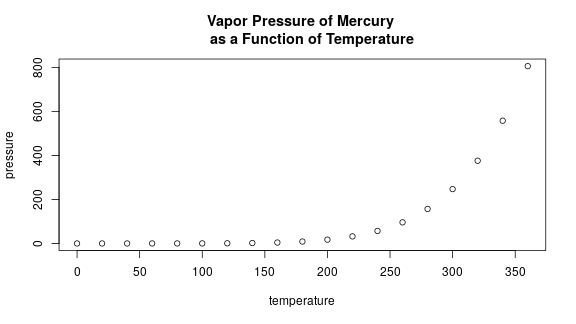

summary(lm(mpg ~ wt, data = mtcars))$coef
## Estimate Std. Error t value Pr(>|t|)
## (Intercept) 37.285126 1.877627 19.857575 8.241799e-19
## wt -5.344472 0.559101 -9.559044 1.293959e-10
library(ggplot2)
ggplot(mtcars, aes(wt, mpg)) + geom_point() +
geom_smooth(method = lm,
fullrange = TRUE, color = "black") +
geom_point() + ggtitle("mtcars: lm(mpg ~ wt)") +
coord_cartesian(xlim = c(1.5, 5.5), ylim = c(5,35))
